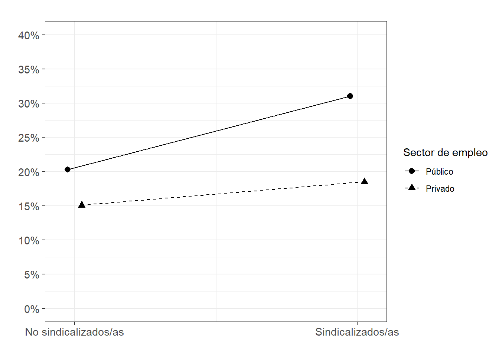

pacman::p_load(dplyr, summarytools, sjPlot,texreg, corrplot,ggplot2,sjlabelled, fastDummies)Práctica 6 Correlación y regresión
Metodología I - Magíster en Ciencias Sociales
Presentación
La siguiente práctica tiene el objetivo de repasar en la interpretación de coeficientes de correlación y la construcción de índices, así como también en la interpretación de coeficientes de regresión lineal y logística. Para ello, utilizaremos la base de datos de la tercera ola del Estudio Longitudinal Social del Chile 2018 con el objetivo de analizar los determinantes de la Participación Ciudadana.
La versión original de este ejercicio proviene del curso de Estadística multivariada versión 2022.
Librerías
Datos
El Estudio Longitudinal Social del Chile ELSOC, único en Chile y América Latina, consiste en encuestar a casi 3.000 chilenos, anualmente, a lo largo de una década. ELSOC ha sido diseñado para evaluar la manera cómo piensan, sienten y se comportan los chilenos en torno a un conjunto de temas referidos al conflicto y la cohesión social en Chile. La población objetivo son hombres y mujeres entre 15 y 75 años de edad con un alcance nacional, donde se obtuvo una muestra final de 3748 casos en el año 2018.
load("../files/data/elsoc2.RData")#Cargamos la base de datos desde internet
load(url("https://github.com/Kevin-carrasco/metod1-MCS/raw/main/files/data/elsoc2.RData"))Explorar datos
A partir de la siguiente tabla se obtienen estadísticos descriptivos que luego serán relevantes para realizar las transformaciones y análisis posteriores.
view_df(elsoc,max.len = 50)| ID | Name | Label | Values | Value Labels |
| 1 | sexo | Sexo entrevistado | 0 1 |
Hombre Mujer |
| 2 | edad | Edad entrevistado | range: 18-90 | |
| 3 | educ | Nivel educacional | 1 2 3 4 5 |
Primaria incompleta menos Primaria y secundaria baja Secundaria alta Terciaria ciclo corto Terciaria y Postgrado |
| 4 | pospol | Autoubicacion escala izquierda-derecha | 1 2 3 4 |
Derecha Centro Izquierda Indep./Ninguno |
| 5 | part01 | Frecuencia: Firma carta o peticion apoyando causa | 1 2 3 4 5 |
Nunca Casi nunca A veces Frecuentemente Muy frecuentemente |
| 6 | part02 | Frecuencia: Asiste a mbackground-color:#eeeeeeha o manifestacion pacifica |
1 2 3 4 5 |
Nunca Casi nunca A veces Frecuentemente Muy frecuentemente |
| 7 | part03 | Frecuencia: Participa en huelga | 1 2 3 4 5 |
Nunca Casi nunca A veces Frecuentemente Muy frecuentemente |
| 8 | part04 | Frecuencia: Usa redes sociales para opinar en temas publicos |
1 2 3 4 5 |
Nunca Casi nunca A veces Frecuentemente Muy frecuentemente |
| 9 | inghogar | Ingreso total del hogar | range: 30000-17000000 | |
| 10 | inghogar_t | Ingreso total del hogar (en tramos) | 1 2 3 4 5 6 7 8 9 10 11 12 13 14 15 16 17 18 19 20 |
Menos de $220.000 mensuales liquidos De $220.001 a $280.000 mensuales liquidos De $280.001 a $330.000 mensuales liquidos De $330.001 a $380.000 mensuales liquidos De $380.001 a $420.000 mensuales liquidos De $420.001 a $470.000 mensuales liquidos De $470.001 a $510.000 mensuales liquidos De $510.001 a $560.000 mensuales liquidos De $560.001 a $610.000 mensuales liquidos De $610.001 a $670.000 mensuales liquidos De $670.001 a $730.000 mensuales liquidos De $730.001 a $800.000 mensuales liquidos De $800.001 a $890.000 mensuales liquidos De $890.001 a $980.000 mensuales liquidos De $980.001 a $1.100.000 mensuales liquidos De $1.100.001 a $1.260.000 mensuales liquidos De $1.260.001 a $1.490.000 mensuales liquidos De $1.490.001 a $1.850.000 mensuales liquidos De $1.850.001 a $2.700.000 mensuales liquidos Mas de $2.700.000 a mensuales liquidos |
| 11 | tamhogar | Habitantes del hogar | range: 1-14 | |
Variable dependiente: participación política
plot_stackfrq(elsoc[,c("part01","part02","part03","part04")]) + theme(legend.position="bottom")
corrplot.mixed(cor(select(elsoc,part01,part02,part03,part04),
use = "complete.obs"))
elsoc <- elsoc %>% mutate(partpol=rowSums(select(., part01,part02,part03,part04)))
summary(elsoc$partpol) Min. 1st Qu. Median Mean 3rd Qu. Max. NA's
4.000 4.000 4.000 5.473 6.000 20.000 8 Variable independiente: ingresos
ingresos hogar variable continua
summary(elsoc$inghogar) Min. 1st Qu. Median Mean 3rd Qu. Max. NA's
30000 300000 500000 678843 800000 17000000 668 ingreso hogar en tramos
sjmisc::frq(elsoc$inghogar_t,
out = "txt",
show.na = T) %>% knitr::kable()
|
podemos obtener la mediana de cada tramo
elsoc$inghogar_t[elsoc$inghogar_t==1] <-( 220000 ) # [1] "Menos de $220.000 mensuales liquidos"
elsoc$inghogar_t[elsoc$inghogar_t==2] <-(220001 +280000 )/2 # [2] "De $220.001 a $280.000 mensuales liquidos"
elsoc$inghogar_t[elsoc$inghogar_t==3] <-(280001 +330000 )/2 # [3] "De $280.001 a $330.000 mensuales liquidos"
elsoc$inghogar_t[elsoc$inghogar_t==4] <-(330001 +380000 )/2 # [4] "De $330.001 a $380.000 mensuales liquidos"
elsoc$inghogar_t[elsoc$inghogar_t==5] <-(380001 +420000 )/2 # [5] "De $380.001 a $420.000 mensuales liquidos"
elsoc$inghogar_t[elsoc$inghogar_t==6] <-(420001 +470000 )/2 # [6] "De $420.001 a $470.000 mensuales liquidos"
elsoc$inghogar_t[elsoc$inghogar_t==7] <-(470001 +510000 )/2 # [7] "De $470.001 a $510.000 mensuales liquidos"
elsoc$inghogar_t[elsoc$inghogar_t==8] <-(510001 +560000 )/2 # [8] "De $510.001 a $560.000 mensuales liquidos"
elsoc$inghogar_t[elsoc$inghogar_t==9] <-(560001 +610000 )/2 # [9] "De $560.001 a $610.000 mensuales liquidos"
elsoc$inghogar_t[elsoc$inghogar_t==10]<-(610001 +670000 )/2 # [10] "De $610.001 a $670.000 mensuales liquidos"
elsoc$inghogar_t[elsoc$inghogar_t==11]<-(670001 +730000 )/2 # [11] "De $670.001 a $730.000 mensuales liquidos"
elsoc$inghogar_t[elsoc$inghogar_t==12]<-(730001 +800000 )/2 # [12] "De $730.001 a $800.000 mensuales liquidos"
elsoc$inghogar_t[elsoc$inghogar_t==13]<-(800001 +890000 )/2 # [13] "De $800.001 a $890.000 mensuales liquidos"
elsoc$inghogar_t[elsoc$inghogar_t==14]<-(890001 +980000 )/2 # [14] "De $890.001 a $980.000 mensuales liquidos"
elsoc$inghogar_t[elsoc$inghogar_t==15]<-(980001 +1100000)/2 # [15] "De $980.001 a $1.100.000 mensuales liquidos"
elsoc$inghogar_t[elsoc$inghogar_t==16]<-(1100001+1260000)/2 # [16] "De $1.100.001 a $1.260.000 mensuales liquidos"
elsoc$inghogar_t[elsoc$inghogar_t==17]<-(1260001+1490000)/2 # [17] "De $1.260.001 a $1.490.000 mensuales liquidos"
elsoc$inghogar_t[elsoc$inghogar_t==18]<-(1490001+1850000)/2 # [18] "De $1.490.001 a $1.850.000 mensuales liquidos"
elsoc$inghogar_t[elsoc$inghogar_t==19]<-(1850001+2700000)/2 # [19] "De $1.850.001 a $2.700.000 mensuales liquidos"
elsoc$inghogar_t[elsoc$inghogar_t==20]<-(2700000) # [20] "Mas de $2.700.000 a mensuales liquidos"y luego imputar este valor medio a los casos NA
elsoc$inghogar_i <- ifelse(test = (is.na(elsoc$inghogar)), #¿existen NA en ingresos?
yes = elsoc$inghogar_t, #VERDADERO, remplazar con la media del tramo
no = elsoc$inghogar) #FALSE, mantener la variable original.
elsoc$inghogar_i <- set_label(elsoc$inghogar_i,"Ingreso total del hogar (imputada)")elsoc$ing_pcap <- elsoc$inghogar_i/elsoc$tamhogar
elsoc$ing_pcap <- set_label(elsoc$ing_pcap,"Ingreso per cápita del hogar")elsoc$quintile<- dplyr::ntile(x = elsoc$ing_pcap,
n = 5) # n de categorias, para quintiles usamos 5
elsoc$quintile <- factor(elsoc$quintile,c(1,2,3,4,5), c("Quintil 1","Quintil 2","Quintil 3","Quintil 4","Quintil 5"))
elsoc %>%
group_by(quintile) %>%
summarise(n=n(),
Media=mean(ing_pcap,na.rm = T),
Mediana=median(ing_pcap,na.rm = T)) %>%
knitr::kable()| quintile | n | Media | Mediana |
|---|---|---|---|
| Quintil 1 | 711 | 62859.09 | 66666.67 |
| Quintil 2 | 711 | 112218.97 | 111250.12 |
| Quintil 3 | 710 | 167748.23 | 166666.67 |
| Quintil 4 | 710 | 262710.27 | 250000.50 |
| Quintil 5 | 710 | 710246.41 | 500000.00 |
| NA | 196 | NaN | NA |
elsoc$quintilemiss <- factor(elsoc$quintile,ordered = T)
elsoc$quintilemiss <- ifelse(test=is.na(elsoc$quintilemiss),yes = 6,no = elsoc$quintilemiss)
elsoc$quintilemiss <- factor(elsoc$quintilemiss ,levels = c(1,2,3,4,5,6),labels = c("Quintil 1","Quintil 2","Quintil 3","Quintil 4","Quintil 5","Missing"))
elsoc %>% group_by(quintilemiss) %>% summarise(n=n())# A tibble: 6 × 2
quintilemiss n
<fct> <int>
1 Quintil 1 711
2 Quintil 2 711
3 Quintil 3 710
4 Quintil 4 710
5 Quintil 5 710
6 Missing 196Variables dummy
Una forma de pasar una variable categórica a dummies es con la función dummy_cols del paquete fastDummies
elsoc <- dummy_cols(elsoc, select_columns = "quintilemiss")
head(elsoc[,16:22]) quintilemiss quintilemiss_Quintil 1 quintilemiss_Quintil 2
1 Quintil 1 1 0
2 Quintil 5 0 0
3 Quintil 1 1 0
4 Quintil 5 0 0
5 Missing 0 0
6 Quintil 3 0 0
quintilemiss_Quintil 3 quintilemiss_Quintil 4 quintilemiss_Quintil 5
1 0 0 0
2 0 0 1
3 0 0 0
4 0 0 1
5 0 0 0
6 1 0 0
quintilemiss_Missing
1 0
2 0
3 0
4 0
5 1
6 0¿cómo hacerlo para una variable numérica?
También existen muchas formas, como por ejemplo establecer como punto de corte la media o la mediana, o ver la distribución de las respuestas y tratar de establecer una distribución homogénea entre las dos nuevas categorías.
Si recordamos la distribución de nuestra variable dependiente antes de construir el índice de participación:
plot_stackfrq(elsoc[,c("part01","part02","part03","part04")]) + theme(legend.position="bottom")
y luego en el índice de participación
summary(elsoc$partpol) Min. 1st Qu. Median Mean 3rd Qu. Max. NA's
4.000 4.000 4.000 5.473 6.000 20.000 8 Podemos notar que la mayoría de las respuestas se agrupan en la categoría “nunca” de las variables por separado y luego en el índice la mediana también corresponde al valor mínimo posible de “4” que es la suma de todas las personas que nunca han participado en ninguna de las opciones. Por lo tanto, tenemos dos criterios que nos permiten decidir que nuestra variable dependiente puede ser considera como dummy bajo los valores 0=nunca ha participado; y 1=si ha participado.
Una forma de hacer esta agrupación de valores es con la función case_when del paquete dplyr (similar a ifelse)
elsoc <- elsoc %>% rowwise() %>% mutate(partpol_dummy = case_when(partpol==4~0,
partpol>4~1,
TRUE ~ NA))
table(elsoc$partpol_dummy)
0 1
2074 1666 Regresión lineal
veamos primero las diferencias de usar cada tipo de variable de ingreso
fit01<- lm(partpol~ing_pcap,data=elsoc)
fit02<- lm(partpol~quintile,data=elsoc)
fit03<- lm(partpol~quintilemiss,data=elsoc)labs01 <- c("Intercepto","Ingreso per/cap",
"Quintil 2","Quintil 3","Quintil 4","Quintil 5",
"Quintil 2","Quintil 3","Quintil 4","Quintil 5","Quintil perdido")#screenreg para que se vea en R
screenreg(list(fit01,fit02,fit03),custom.coef.names = labs01)# htmlreg para que se vea en el sitio web
htmlreg(list(fit01,fit02,fit03),doctype = FALSE,
custom.model.names = c("Modelo 1","Modelo 2","Modelo 3"),
custom.coef.names = labs01)| Modelo 1 | Modelo 2 | Modelo 3 | |
|---|---|---|---|
| Intercepto | 5.25*** | 4.99*** | 4.99*** |
| (0.05) | (0.08) | (0.09) | |
| Ingreso per/cap | 0.00*** | ||
| (0.00) | |||
| Quintil 2 | 0.19 | 0.19 | |
| (0.12) | (0.12) | ||
| Quintil 3 | 0.51*** | 0.51*** | |
| (0.12) | (0.12) | ||
| Quintil 4 | 0.60*** | 0.60*** | |
| (0.12) | (0.12) | ||
| Quintil 5 | 1.08*** | 1.08*** | |
| (0.12) | (0.12) | ||
| Quintil perdido | 0.66*** | ||
| (0.18) | |||
| R2 | 0.01 | 0.03 | 0.02 |
| Adj. R2 | 0.01 | 0.03 | 0.02 |
| Num. obs. | 3546 | 3546 | 3740 |
| ***p < 0.001; **p < 0.01; *p < 0.05 | |||
El tercer modelo, con el quintil de casos perdidos, es el que entrega más información y además tiene mayor cantidad de casos (3740).
fit04<- lm(partpol~sexo,data=elsoc)
fit05<- lm(partpol~sexo+edad,data=elsoc)
fit06<- lm(partpol~sexo+edad+quintilemiss,data=elsoc)
fit07<- lm(partpol~sexo+edad+quintilemiss+pospol,data=elsoc)
labs02 <- c("Intercepto","Sexo (mujer=1)","Edad",
"Quintil 2","Quintil 3","Quintil 4","Quintil 5","Quintil perdido",
"Izquierda (ref. derecha)","Centro","Idep./Ninguno")screenreg(list(fit04,fit05,fit06, fit07),custom.coef.names = labs02)htmlreg(list(fit04,fit05,fit06, fit07),doctype = FALSE,
custom.model.names = c("Modelo 1","Modelo 2","Modelo 3", "Modelo 4"),
custom.coef.names = labs02)| Modelo 1 | Modelo 2 | Modelo 3 | Modelo 4 | |
|---|---|---|---|---|
| Intercepto | 5.56*** | 7.62*** | 7.03*** | 7.97*** |
| (0.06) | (0.12) | (0.15) | (0.16) | |
| Sexo (mujer=1) | -0.13 | -0.08 | 0.07 | 0.12 |
| (0.08) | (0.07) | (0.07) | (0.07) | |
| Edad | -0.04*** | -0.04*** | -0.04*** | |
| (0.00) | (0.00) | (0.00) | ||
| Quintil 2 | 0.23* | 0.21 | ||
| (0.12) | (0.11) | |||
| Quintil 3 | 0.51*** | 0.51*** | ||
| (0.12) | (0.11) | |||
| Quintil 4 | 0.56*** | 0.50*** | ||
| (0.12) | (0.11) | |||
| Quintil 5 | 1.02*** | 0.88*** | ||
| (0.12) | (0.12) | |||
| Quintil perdido | 0.51** | 0.59*** | ||
| (0.18) | (0.18) | |||
| Izquierda (ref. derecha) | -1.04*** | |||
| (0.10) | ||||
| Centro | -1.13*** | |||
| (0.11) | ||||
| Idep./Ninguno | -1.60*** | |||
| (0.10) | ||||
| R2 | 0.00 | 0.09 | 0.11 | 0.17 |
| Adj. R2 | 0.00 | 0.09 | 0.11 | 0.17 |
| Num. obs. | 3740 | 3740 | 3740 | 3656 |
| ***p < 0.001; **p < 0.01; *p < 0.05 | ||||
El Modelo 1 indica que las mujeres participan 0.13 unidades menos en comparación con los hombres, sin embargo, esta relación no es estadísticamente significativa (p>0.05).
El Modelo 2 indica que por cada unidad que aumenta la edad, la participación política disminuye en promedio 0.04 unidades, con un 99.9% de significación estadístico y manteniendo el sexo constante. Esta relación es consistente en los otros dos modelos.
El Modelo 3 indica que en medida que aumenta el ingreso, la participación política tiende a ser más alta. En específico, en comparación con el menor quintil de ingreso, al pertenecer a un quintil de ingreso 2 (p<0.05), 3, 4 y 5 (p<0.001), la participación política aumenta, manteniendo el resto de las variables constantes. Este efecto disminuye un poco en el modelo siguiente, pero mantiene un efecto lineal (a mayor quintil, mayor participación).
En el Modelo 4 que incluye la posición política de los/as encuestados, la participación política de las personas de izquierda, centro o independiente/ninguno es menor en comparación con las personas de derecha, con una significación estadística del 99.9%, manteniendo el resto de las variables constantes.
Regresión logística
La Encuesta Mundial de Valores (EMV) o World Values Survey WVS es un proyecto global de investigación social que explora los valores y opiniones de la gente, cómo estos cambian con el tiempo, y su impacto social y político. Desde 1981 una red mundial de científicos sociales y politólogos llevan a cabo esta investigación, haciendo encuestas nacionales representativas en casi 100 países. La WVS es la única fuente de datos empíricos sobre actitudes y valores humanos que abarca a la mayoría de la población mundial (casi el 90%).
Objetivo
En el ejemplo de esta práctica, que utiliza solo casos para Chile entre 2005 y 2022, se intentará responder la pregunta ¿existe una relación entre la afiliación a sindicatos y la participación en marchas?
Debido a la naturaleza de la variable dependiente participación en marchas (si/no), el objetivo de esta práctica es estimar modelos de regresión logística binaria.
Librerías
pacman::p_load(tidyr,
dplyr,
sjPlot,
sjmisc,
psych,
texreg,
haven,
ggplot2,
lmtest,
DescTools)Datos
WVS_2005_2022_Chl<- readRDS(file = "../files/data/WVS_2005_2022_Chl.rds")#Cargamos la base de datos desde internet
load(url("https://github.com/Kevin-carrasco/metod1-MCS/raw/main/files/data/WVS_2005_2022_Chl.RData"))Explorar datos
summary(WVS_2005_2022_Chl) #con comando de paquete haven Unionized demonstr_dummy petition_dummy Wave
Min. :0.0000 Min. :0.0000 Min. :0.0000 Wave 5:373
1st Qu.:0.0000 1st Qu.:0.0000 1st Qu.:0.0000 Wave 6:516
Median :0.0000 Median :0.0000 Median :0.0000 Wave 7:568
Mean :0.1984 Mean :0.2073 Mean :0.1846
3rd Qu.:0.0000 3rd Qu.:0.0000 3rd Qu.:0.0000
Max. :1.0000 Max. :1.0000 Max. :1.0000
pol_pos pol_pos_left politicization civic_involvement
left :360 Min. :0.0000 Min. :0.00 Min. :0.0000
center :509 1st Qu.:0.0000 1st Qu.:1.00 1st Qu.:0.0000
right :215 Median :0.0000 Median :2.00 Median :0.0000
Not identified: 0 Mean :0.2471 Mean :1.95 Mean :0.6905
NA's :373 3rd Qu.:0.0000 3rd Qu.:3.00 3rd Qu.:1.0000
Max. :1.0000 Max. :6.00 Max. :3.0000
X003 age Female Educ private_sector
Min. :18.00 1:128 Min. :0.0000 1:123 Min. :0.0000
1st Qu.:31.00 2:341 1st Qu.:0.0000 2:924 1st Qu.:1.0000
Median :41.00 3:400 Median :0.0000 3:410 Median :1.0000
Mean :41.44 4:352 Mean :0.4084 Mean :0.8593
3rd Qu.:50.00 5:188 3rd Qu.:1.0000 3rd Qu.:1.0000
Max. :80.00 6: 48 Max. :1.0000 Max. :1.0000
gvt_resp tax_rich unempl_aid state_inc_eq
Min. : 1.000 Min. : 1.000 Min. : 1.000 Min. : 1.000
1st Qu.: 5.000 1st Qu.: 5.000 1st Qu.: 5.000 1st Qu.: 5.000
Median : 6.000 Median : 7.000 Median : 7.000 Median : 7.000
Mean : 6.457 Mean : 6.446 Mean : 7.103 Mean : 6.689
3rd Qu.: 9.000 3rd Qu.: 9.000 3rd Qu.:10.000 3rd Qu.: 9.000
Max. :10.000 Max. :10.000 Max. :10.000 Max. :10.000
NA's :16 NA's :87 NA's :62 NA's :439 describe(WVS_2005_2022_Chl) #con comando de paquete psych vars n mean sd median trimmed mad min max range
Unionized 1 1457 0.20 0.40 0 0.12 0.00 0 1 1
demonstr_dummy 2 1457 0.21 0.41 0 0.13 0.00 0 1 1
petition_dummy 3 1457 0.18 0.39 0 0.11 0.00 0 1 1
Wave* 4 1457 2.13 0.79 2 2.17 1.48 1 3 2
pol_pos* 5 1084 1.87 0.72 2 1.83 1.48 1 3 2
pol_pos_left 6 1457 0.25 0.43 0 0.18 0.00 0 1 1
politicization 7 1457 1.95 1.61 2 1.81 1.48 0 6 6
civic_involvement 8 1457 0.69 0.98 0 0.49 0.00 0 3 3
X003 9 1457 41.44 12.25 41 41.13 13.34 18 80 62
age* 10 1457 3.19 1.27 3 3.18 1.48 1 6 5
Female 11 1457 0.41 0.49 0 0.39 0.00 0 1 1
Educ* 12 1457 2.20 0.57 2 2.23 0.00 1 3 2
private_sector 13 1457 0.86 0.35 1 0.95 0.00 0 1 1
gvt_resp 14 1441 6.46 2.58 6 6.61 2.97 1 10 9
tax_rich 15 1370 6.45 2.72 7 6.64 2.97 1 10 9
unempl_aid 16 1395 7.10 2.53 7 7.37 2.97 1 10 9
state_inc_eq 17 1018 6.69 2.60 7 6.90 2.97 1 10 9
skew kurtosis se
Unionized 1.51 0.28 0.01
demonstr_dummy 1.44 0.08 0.01
petition_dummy 1.62 0.64 0.01
Wave* -0.24 -1.37 0.02
pol_pos* 0.20 -1.04 0.02
pol_pos_left 1.17 -0.63 0.01
politicization 0.56 -0.43 0.04
civic_involvement 1.31 0.51 0.03
X003 0.21 -0.63 0.32
age* 0.15 -0.66 0.03
Female 0.37 -1.86 0.01
Educ* -0.02 -0.28 0.01
private_sector -2.06 2.26 0.01
gvt_resp -0.32 -0.71 0.07
tax_rich -0.34 -0.81 0.07
unempl_aid -0.62 -0.43 0.07
state_inc_eq -0.40 -0.61 0.08Regresiones logísticas
El punto de partida es transformación de los coeficientes 𝛽 en coeficientes logit:
Se conoce como “logit” a la transformación logarítmica de los odds (traducidos comúnmente como “chances”)
¿Qué son los odds? Una razón de probabilidades
Por lo tanto, para estimar probabilidades a través de una regresión logística hay que seguir estos pasos:
- Estimar los odds o razón de probabilidades
- Estimar odds ratios (razones entre odds)
- Aplicar una transformación logarítmica a esos odds ratios para obtener coeficientes logit
- Calcular las probabilidades
Tabla de contingencia bivariado: sindicalización / participación en marchas
WVS_2005_2022_Chl <- WVS_2005_2022_Chl %>%
mutate(Unionized = labelled(.$Unionized,c("No"=0,"Sí"=1)),
demonstr_dummy = labelled(.$demonstr_dummy,c("No"=0,"Sí"=1)))
WVS_2005_2022_Chl <- as.data.frame(WVS_2005_2022_Chl) #para que la base quede como data frame (necesario para las figuras)
frq(WVS_2005_2022_Chl$Unionized)x <numeric>
# total N=1457 valid N=1457 mean=0.20 sd=0.40
Value | Label | N | Raw % | Valid % | Cum. %
-----------------------------------------------
0 | No | 1168 | 80.16 | 80.16 | 80.16
1 | Sí | 289 | 19.84 | 19.84 | 100.00
<NA> | <NA> | 0 | 0.00 | <NA> | <NA>frq(WVS_2005_2022_Chl$demonstr_dummy)x <integer>
# total N=1457 valid N=1457 mean=0.21 sd=0.41
Value | Label | N | Raw % | Valid % | Cum. %
-----------------------------------------------
0 | No | 1155 | 79.27 | 79.27 | 79.27
1 | Sí | 302 | 20.73 | 20.73 | 100.00
<NA> | <NA> | 0 | 0.00 | <NA> | <NA>sjPlot::tab_xtab(var.col = WVS_2005_2022_Chl$Unionized,
var.row = WVS_2005_2022_Chl$demonstr_dummy,
title = "Participación en marchas según afiliación sindical",
show.col.prc = TRUE,
value.labels = TRUE,
encoding = "UTF-8")Warning: `valueLables` needs to be a `list`-object.| demonstr_dummy | Unionized | Total | |
|---|---|---|---|
| No | Sí | ||
| No | 941 80.6 % |
214 74 % |
1155 79.3 % |
| Sí | 227 19.4 % |
75 26 % |
302 20.7 % |
| Total | 1168 100 % |
289 100 % |
1457 100 % |
| χ2=5.598 · df=1 · φ=0.064 · p=0.018 | |||
Odds
\[Odds_{participar} = \frac{0.207}{0.793} = 0.26\]
Las chances de participar en una marcha son de 0,26, respecto a las chances de no participar
En otras palabras: por cada 1 persona, hay sólo 0,26 personas que participan en marchas.
O más intuitivamente, por cada 100 personas, hay sólo 26 personas que participan
¿Cambian las chances de participar según se esté afiliado/a a un sindicato
\[Odds_{sindical} = \frac{0.26}{0.74} = 0.35\]
\[Odds_{no.sindical} = \frac{0.194}{0.806} = 0.24\]
¿Cómo se interpretan los odds?
Valores bajo 1 indican que las chances de que ocurra un evento son negativas
Valores iguales a 1 indican chances iguales
Valores sobre 1 indican chances positivas
Odds ratios (razones de chances)
Cálculo que permite reflejar asociación entre dos variables dicotómicas, a partir de una comparación entre chances
Siguiendo con el ejemplo anterior, ¿tienen los/as sindicalizados más chances de participar en marchas que quienes no están sindicalizados/as?
\[OR = \frac{P_{sindical}/(1-P_{sindical})}{P_{no.sindical}/(1-P_{no.sindical})}\]
\[OR = \frac{0.26/0.74}{0.194/0.806} = \frac{0.35}{0.24} = 1.46\]
Las chances de participar en marchas de los/as sindicalizados/as son 1,5 veces más que las de quienes no están sindicalizados/as
Implicancias:
- El odds ratio o razones de chances es útil porque nos permite expresar en un número la relación entre dos variables categóricas
- En las regresiones logísticas, el odds ratio es la primera manera de aproximarnos a relación entre variables
- Sin embargo, falta un paso más necesario para construir modelos de regresión logística
Logit
Es una unidad de medida de la relación entre dos variables (VD: dicotómica), que en regresión logística se calcula a partir del logaritmo natural de los odds
Esta transformación logarítmica es la base de la estimación de parámetros en la regresión logística:
La mejor combinación lineal de predictores no se obtiene a través de MCO, sino a través del procedimiento de máxima verosimilitud
- A diferencia de los odds ratio, los coeficientes logit tienen valores que van de –a +
Modelo de probabilidad lineal
Primero, solo para comparación, estimamos un modelo de probabilidad lineal.
m1mpl <- lm(demonstr_dummy ~ Unionized + Wave, data = WVS_2005_2022_Chl)htmlreg(m1mpl,
custom.model.names = "Modelo de Prob Lineal",
digits = 3,
stars = c(0.001, 0.01, 0.05, 0.1),symbol = "†")| Modelo de Prob Lineal | |
|---|---|
| (Intercept) | 0.167*** |
| (0.022) | |
| Unionized | 0.072** |
| (0.027) | |
| WaveWave 6 | 0.079** |
| (0.027) | |
| WaveWave 7 | -0.005 |
| (0.027) | |
| R2 | 0.013 |
| Adj. R2 | 0.011 |
| Num. obs. | 1457 |
| ***p < 0.001; **p < 0.01; *p < 0.05; †p < 0.1 | |
Modelo de regresión logística
m0log <- glm(demonstr_dummy~ Unionized, data = WVS_2005_2022_Chl, family = "binomial"(link = "logit"))
m1log <- glm(demonstr_dummy~ Unionized + Wave, data = WVS_2005_2022_Chl, family = "binomial"(link = "logit"))
#nota: "logit" viene por defecto en la opción "binomial", por eso no es necesario
#incluirla explícitamente en el código (tal como lo hago en los modelos sgtes)
m2log <- glm(demonstr_dummy~ Unionized + Female + X003 + Educ + private_sector + Wave, data = WVS_2005_2022_Chl,family = "binomial")
m3log <- glm(demonstr_dummy~ Unionized + Female + X003 + Educ + private_sector + politicization + Wave, data = WVS_2005_2022_Chl,family = "binomial")htmlreg(list(m1mpl, m1log,m2log,m3log),
custom.model.names = c("M1 (m prob lineal)","M1 (log odds)","M2 (log odds)","M3 (log odds)"),
digits = 3,
stars = c(0.001, 0.01, 0.05, 0.1),symbol = "†")| M1 (m prob lineal) | M1 (log odds) | M2 (log odds) | M3 (log odds) | |
|---|---|---|---|---|
| (Intercept) | 0.167*** | -1.601*** | -1.023* | -1.379** |
| (0.022) | (0.140) | (0.424) | (0.437) | |
| Unionized | 0.072** | 0.418** | 0.390* | 0.312† |
| (0.027) | (0.155) | (0.157) | (0.161) | |
| WaveWave 6 | 0.079** | 0.470** | 0.498** | 0.496** |
| (0.027) | (0.168) | (0.171) | (0.174) | |
| WaveWave 7 | -0.005 | -0.031 | -0.102 | -0.121 |
| (0.027) | (0.174) | (0.181) | (0.184) | |
| Female | -0.020 | 0.100 | ||
| (0.136) | (0.139) | |||
| X003 | -0.007 | -0.012* | ||
| (0.006) | (0.006) | |||
| Educ2 | 0.042 | -0.053 | ||
| (0.268) | (0.272) | |||
| Educ3 | 0.521† | 0.259 | ||
| (0.283) | (0.289) | |||
| private_sector | -0.516** | -0.445* | ||
| (0.175) | (0.180) | |||
| politicization | 0.282*** | |||
| (0.042) | ||||
| R2 | 0.013 | |||
| Adj. R2 | 0.011 | |||
| Num. obs. | 1457 | 1457 | 1457 | 1457 |
| AIC | 1475.887 | 1460.059 | 1415.850 | |
| BIC | 1497.024 | 1507.616 | 1468.691 | |
| Log Likelihood | -733.944 | -721.030 | -697.925 | |
| Deviance | 1467.887 | 1442.059 | 1395.850 | |
| ***p < 0.001; **p < 0.01; *p < 0.05; †p < 0.1 | ||||
En el Modelo 1 (M1), el log-odds de participación en marchas para afiliados a sindicatos aumenta en 0.418 en comparación con los no sindicalizados (p<0.01). Este resultado mantiene su significación estadística en el Modelo 2 y baja su significación a p<0.1 en el Modelo 3, al controlar por las demás variables independientes.
En el Modelo 2, En comparación a los/as trabajadores/as del sector público (categoría de referencia), el log-odds de participación en marchas para los/as del sector privado disminuye en 0,52 (p < 0,01), manteniendo el resto de variables constantes.
En el Modelo 3, por cada unidad de aumento en la escala de politización, el log-odds de participación en marchas aumenta en 0,28 (p < 0,001), manteniendo el resto de las variables constantes.
Problemas de interpretación
A pesar de sus ventajas, los coeficientes logit son difíciles de interpretar:
Los coef. logit son el resultado de una transformación de la escala original
Ellos no muestran directamente probabilidades
Entonces: Volver a la escala original de odds ratio mediante la exponenciación de los coeficientes (la función exponencial es la inversa del logaritmo)
\[logit_x = log(odds)\]
\[e^{logit} = odds_x\]
\[e^{0.39} = odds_x = 1.477\]
Las chances (odds) de participar en marchas de los/as sindicalizados/as son 1,5 veces más que las de quienes no están sindicalizados/as, controlando por las otras variables incluidas en el modelo
Estimación de odds ratios
exp(coef(m1log)) #comando básico(Intercept) Unionized WaveWave 6 WaveWave 7
0.2016888 1.5185264 1.5996549 0.9694021 ### Cálculo de OR para cada modelo
m0log_OR <- exp(coef(m0log))
m1log_OR <- exp(coef(m1log))
m2log_OR <- exp(coef(m2log))
m3log_OR <- exp(coef(m3log))##Odds ratios en tabla de texreg
htmlreg(list(m1log,m2log,m3log),
override.coef = list(m1log_OR,m2log_OR,m3log_OR), # Sobreescribir coeficientes
custom.model.names = c("m1 (OR)","m2 (OR)","m3 (OR)"),
digits = 3,
stars = c(0.001, 0.01, 0.05, 0.1),symbol = "†")| m1 (OR) | m2 (OR) | m3 (OR) | |
|---|---|---|---|
| (Intercept) | 0.202*** | 0.359* | 0.252** |
| (0.140) | (0.424) | (0.437) | |
| Unionized | 1.519** | 1.477* | 1.366† |
| (0.155) | (0.157) | (0.161) | |
| WaveWave 6 | 1.600** | 1.646** | 1.642** |
| (0.168) | (0.171) | (0.174) | |
| WaveWave 7 | 0.969 | 0.903 | 0.886 |
| (0.174) | (0.181) | (0.184) | |
| Female | 0.980 | 1.106 | |
| (0.136) | (0.139) | ||
| X003 | 0.993 | 0.988* | |
| (0.006) | (0.006) | ||
| Educ2 | 1.042 | 0.949 | |
| (0.268) | (0.272) | ||
| Educ3 | 1.684† | 1.296 | |
| (0.283) | (0.289) | ||
| private_sector | 0.597** | 0.641* | |
| (0.175) | (0.180) | ||
| politicization | 1.326*** | ||
| (0.042) | |||
| AIC | 1475.887 | 1460.059 | 1415.850 |
| BIC | 1497.024 | 1507.616 | 1468.691 |
| Log Likelihood | -733.944 | -721.030 | -697.925 |
| Deviance | 1467.887 | 1442.059 | 1395.850 |
| Num. obs. | 1457 | 1457 | 1457 |
| ***p < 0.001; **p < 0.01; *p < 0.05; †p < 0.1 | |||
#Nota: errores estándares en esta tabla NO tienen sentido (no están calculados a partir de OR, sino de log odds)
#Es mejor no reportarlos si solo se van a presentar odds ratiosSin embargo, los coeficientes de un modelo de reg. logística (log-odds u odds-ratios) no son comparables con los coeficientes de otro modelo
Cálculo de probabilidades predichas
# Tabla básica: sólo sindicalizacion como vble independ
htmlreg(m0log,
custom.model.names = c("m0 (log odds)"),
digits = 3,
stars = c(0.001, 0.01, 0.05, 0.1),symbol = "†")| m0 (log odds) | |
|---|---|
| (Intercept) | -1.422*** |
| (0.074) | |
| Unionized | 0.374* |
| (0.153) | |
| AIC | 1485.340 |
| BIC | 1495.908 |
| Log Likelihood | -740.670 |
| Deviance | 1481.340 |
| Num. obs. | 1457 |
| ***p < 0.001; **p < 0.01; *p < 0.05; †p < 0.1 | |
A partir de este modelo se pueden predecir log-odds y, más importante aún, probabilidades para personas con distintos atributos controlados en el modelo (ej., sindicalizadas o no)
\[logit(prob.marcha) = 𝛼+ 𝛽_1X_1 \]
\[logit(prob.marcha)_{sindical} = -1.422 + (0.374 * Unionized=1) = -1.048 \]
\[logit(prob.marcha)_{no.sindical} = -1.422 + (0.374 * Unionized=0) = -1.422 \]
Este “puntaje predicho” (log-odds) no tiene interpretación, por lo que hay que pasarlo a Odds
\[Odds_x = e^{𝛼+𝛽_jX_j}\]
\[Odds_{sindicalizados} = e^{-1.048} = 0.35\]
\[Odds_{no.sindicalizados} = e^{-1.422} = 0.24\]
Finalmente, habiendo calculado los odds para cada tipo de persona se pueden calcular sus probabilidades predichas
\[p = \frac{e^{𝛼+𝛽_jX_j}}{1+e^{𝛼+𝛽_jX_j}} = \frac{odds_{xj}}{1+odds_{xj}}\]
\[p_{sindicalizados} = \frac{0.35}{1+0.35} = \frac{0.35}{1.35} = 0.26\]
\[p_{no.sindicalizados} = \frac{0.24}{1+0.24} = \frac{0.24}{1.24} = 0.19\]
La probabilidad de que un/a sindicalizado participe en marchas es del 26%, mientras que la probabilidad de que alguien que no esté sindicalizado/a es del 19%
Cálculo de probabilidades predichas en R
Paquete ggeffects de R: últil para estimar probabilidades predichas a partir de modelos de regresión logísticas
Combinado con ggplot2, se pueden generar gráficos que muestran de modo más intuitivo la relación entre variables
Gráfico de probabilidades predichas para sindicalizados/as y no sindicalizados/as
FigSind_1_Prob <- ggeffects::ggpredict(m3log, terms = c("Unionized")) %>%
ggplot(aes(x=x, y=predicted)) +
geom_bar(stat="identity", color="grey", fill="grey")+
geom_errorbar(aes(ymin = conf.low, ymax = conf.high), width=.1) +
labs(title="Sindicalización", x = "", y = "") +
theme_bw() +
theme(plot.title = element_text(size = 12),
axis.text.x = element_text(angle = 0, vjust = 0.5, size = 12),
axis.text.y = element_text(vjust = 0.5, size = 10)) +
scale_x_continuous(name = "",
breaks = c(0,1),
labels = c("Non-union members", "Union members")) +
scale_y_continuous(limits = c(0,0.35),
breaks = seq(0,0.35, by = 0.05),
labels = scales::percent_format(accuracy = 1L))
FigSind_1_Prob
Gráfico de probabilidades predichas para variable politización
FigPolit_1_Prob<- ggeffects::ggpredict(m3log, terms="politicization") %>%
ggplot(mapping=aes(x = x, y=predicted)) +
labs(title="Politización", x = "", y = "")+
theme_bw() +
geom_smooth()+
geom_ribbon(aes(ymin = conf.low, ymax = conf.high), alpha = .2, fill = "black") +
theme(plot.title = element_text(size = 12),
axis.text.x = element_text(angle = 0, vjust = 0.5, size = 10),
axis.text.y = element_text(vjust = 0.5, size = 10))+
scale_x_continuous(breaks = seq(0,6, by = 1))+
scale_y_continuous(limits = c(0,0.6), breaks=seq(0,0.6, by = 0.1),
labels = scales::percent_format(accuracy = 1L))
FigPolit_1_Prob`geom_smooth()` using method = 'loess' and formula = 'y ~ x'
Bondad de ajuste (comando de paquete lmtest)
- Razón de verosimilitudes
anova(m1log, m2log, test = "Chisq")Analysis of Deviance Table
Model 1: demonstr_dummy ~ Unionized + Wave
Model 2: demonstr_dummy ~ Unionized + Female + X003 + Educ + private_sector +
Wave
Resid. Df Resid. Dev Df Deviance Pr(>Chi)
1 1453 1467.9
2 1448 1442.1 5 25.828 9.635e-05 ***
---
Signif. codes: 0 '***' 0.001 '**' 0.01 '*' 0.05 '.' 0.1 ' ' 1anova(m2log, m3log, test = "Chisq") Analysis of Deviance Table
Model 1: demonstr_dummy ~ Unionized + Female + X003 + Educ + private_sector +
Wave
Model 2: demonstr_dummy ~ Unionized + Female + X003 + Educ + private_sector +
politicization + Wave
Resid. Df Resid. Dev Df Deviance Pr(>Chi)
1 1448 1442.1
2 1447 1395.8 1 46.21 1.063e-11 ***
---
Signif. codes: 0 '***' 0.001 '**' 0.01 '*' 0.05 '.' 0.1 ' ' 1lrtest(m1log, m2log) #likelihood ratio test / Prueba de razón de verosimilitud (comparación m1-m2)Likelihood ratio test
Model 1: demonstr_dummy ~ Unionized + Wave
Model 2: demonstr_dummy ~ Unionized + Female + X003 + Educ + private_sector +
Wave
#Df LogLik Df Chisq Pr(>Chisq)
1 4 -733.94
2 9 -721.03 5 25.828 9.635e-05 ***
---
Signif. codes: 0 '***' 0.001 '**' 0.01 '*' 0.05 '.' 0.1 ' ' 1lrtest(m2log, m3log) #likelihood ratio test / Prueba de razón de verosimilitud (comparación m2-m3)Likelihood ratio test
Model 1: demonstr_dummy ~ Unionized + Female + X003 + Educ + private_sector +
Wave
Model 2: demonstr_dummy ~ Unionized + Female + X003 + Educ + private_sector +
politicization + Wave
#Df LogLik Df Chisq Pr(>Chisq)
1 9 -721.03
2 10 -697.92 1 46.21 1.063e-11 ***
---
Signif. codes: 0 '***' 0.001 '**' 0.01 '*' 0.05 '.' 0.1 ' ' 1- Pseudo R2 (McFadden)
m1log_R2<-DescTools::PseudoR2(m1log)
m2log_R2<-DescTools::PseudoR2(m2log)
m3log_R2<-DescTools::PseudoR2(m3log)#Misma tabla, en log odds, con Pseudo R2
htmlreg(list(m1log,m2log,m3log),
custom.model.names = c("m1 (log odds)","m2 (log odds)","m3 (log odds)"),
custom.gof.rows=list("Pseudo R2" = c(m1log_R2, m2log_R2,m3log_R2)),
digits = 3,
stars = c(0.001, 0.01, 0.05, 0.1),symbol = "†")| m1 (log odds) | m2 (log odds) | m3 (log odds) | |
|---|---|---|---|
| (Intercept) | -1.601*** | -1.023* | -1.379** |
| (0.140) | (0.424) | (0.437) | |
| Unionized | 0.418** | 0.390* | 0.312† |
| (0.155) | (0.157) | (0.161) | |
| WaveWave 6 | 0.470** | 0.498** | 0.496** |
| (0.168) | (0.171) | (0.174) | |
| WaveWave 7 | -0.031 | -0.102 | -0.121 |
| (0.174) | (0.181) | (0.184) | |
| Female | -0.020 | 0.100 | |
| (0.136) | (0.139) | ||
| X003 | -0.007 | -0.012* | |
| (0.006) | (0.006) | ||
| Educ2 | 0.042 | -0.053 | |
| (0.268) | (0.272) | ||
| Educ3 | 0.521† | 0.259 | |
| (0.283) | (0.289) | ||
| private_sector | -0.516** | -0.445* | |
| (0.175) | (0.180) | ||
| politicization | 0.282*** | ||
| (0.042) | |||
| Pseudo R2 | 0.013 | 0.030 | 0.061 |
| AIC | 1475.887 | 1460.059 | 1415.850 |
| BIC | 1497.024 | 1507.616 | 1468.691 |
| Log Likelihood | -733.944 | -721.030 | -697.925 |
| Deviance | 1467.887 | 1442.059 | 1395.850 |
| Num. obs. | 1457 | 1457 | 1457 |
| ***p < 0.001; **p < 0.01; *p < 0.05; †p < 0.1 | |||
Efectos de interacción
sindicalizacion - sector privado
m3.1log <- glm(demonstr_dummy~ Unionized + Female + X003 + Educ + private_sector + politicization + Wave + Unionized*private_sector,
data = WVS_2005_2022_Chl,family = "binomial")htmlreg(list(m1log,m2log,m3log,m3.1log),
custom.model.names = c("M1 (log odds)","M2 (log odds)","M3 (log odds)",
"M3.1 (log odds)"),
digits = 3,
stars = c(0.001, 0.01, 0.05, 0.1),symbol = "†")| M1 (log odds) | M2 (log odds) | M3 (log odds) | M3.1 (log odds) | |
|---|---|---|---|---|
| (Intercept) | -1.601*** | -1.023* | -1.379** | -1.452** |
| (0.140) | (0.424) | (0.437) | (0.447) | |
| Unionized | 0.418** | 0.390* | 0.312† | 0.569 |
| (0.155) | (0.157) | (0.161) | (0.353) | |
| WaveWave 6 | 0.470** | 0.498** | 0.496** | 0.496** |
| (0.168) | (0.171) | (0.174) | (0.174) | |
| WaveWave 7 | -0.031 | -0.102 | -0.121 | -0.122 |
| (0.174) | (0.181) | (0.184) | (0.184) | |
| Female | -0.020 | 0.100 | 0.094 | |
| (0.136) | (0.139) | (0.140) | ||
| X003 | -0.007 | -0.012* | -0.012* | |
| (0.006) | (0.006) | (0.006) | ||
| Educ2 | 0.042 | -0.053 | -0.044 | |
| (0.268) | (0.272) | (0.272) | ||
| Educ3 | 0.521† | 0.259 | 0.259 | |
| (0.283) | (0.289) | (0.289) | ||
| private_sector | -0.516** | -0.445* | -0.360† | |
| (0.175) | (0.180) | (0.210) | ||
| politicization | 0.282*** | 0.281*** | ||
| (0.042) | (0.042) | |||
| Unionized:private_sector | -0.324 | |||
| (0.397) | ||||
| AIC | 1475.887 | 1460.059 | 1415.850 | 1417.185 |
| BIC | 1497.024 | 1507.616 | 1468.691 | 1475.310 |
| Log Likelihood | -733.944 | -721.030 | -697.925 | -697.592 |
| Deviance | 1467.887 | 1442.059 | 1395.850 | 1395.185 |
| Num. obs. | 1457 | 1457 | 1457 | 1457 |
| ***p < 0.001; **p < 0.01; *p < 0.05; †p < 0.1 | ||||
- La interacción también se puede graficar según probabilidades predichas
# ojo que la relación sindicalización x sector privado no es significativa
FigSindSector_int<-ggeffects::ggpredict(m3.1log, terms = c("Unionized", "private_sector")) %>%
ggplot(aes(x=x, y=predicted, shape = group, color = group)) +
geom_line(aes(group=group,linetype = group),position = position_dodge(.1)) +
geom_point(size = 2.5,position = position_dodge(.1))+
scale_x_continuous(name = "", breaks=c(0,1), labels = c("No sindicalizados/as", "Sindicalizados/as")) +
scale_shape_discrete(name = "Sector de empleo",
limits = c("0", "1"),
labels = c("Público", "Privado")) +
scale_color_manual(name = "Sector de empleo",
limits = c("0", "1"),
labels = c("Público", "Privado"),
values = c("black", "black")) +
scale_linetype_manual(name = "Sector de empleo",
limits = c("0", "1"),
labels = c("Público", "Privado"),
values = c("solid", "dashed")) +
scale_y_continuous(limits = c(0,0.40), breaks=seq(0,0.40, by = 0.05),
labels = scales::percent_format(accuracy = 1L)) +
theme_bw() +
labs(title="", y = "") +
theme(plot.title = element_text(size = 11),
axis.text=element_text(size=11))
FigSindSector_int
- Sector de empleo - politización
m3.2log <- glm(demonstr_dummy~ Unionized + Female + X003 + Educ + private_sector
+ politicization + Wave + private_sector*politicization,
data = WVS_2005_2022_Chl,family = "binomial")htmlreg(list(m1log,m2log,m3log,m3.1log,m3.2log),
custom.model.names = c("M1 (log odds)","M2 (log odds)","M3 (log odds)",
"M3.1 (log odds)","M3.2 (log odds)"),
digits = 3,
stars = c(0.001, 0.01, 0.05, 0.1),symbol = "†")| M1 (log odds) | M2 (log odds) | M3 (log odds) | M3.1 (log odds) | M3.2 (log odds) | |
|---|---|---|---|---|---|
| (Intercept) | -1.601*** | -1.023* | -1.379** | -1.452** | -1.416** |
| (0.140) | (0.424) | (0.437) | (0.447) | (0.480) | |
| Unionized | 0.418** | 0.390* | 0.312† | 0.569 | 0.310† |
| (0.155) | (0.157) | (0.161) | (0.353) | (0.161) | |
| WaveWave 6 | 0.470** | 0.498** | 0.496** | 0.496** | 0.495** |
| (0.168) | (0.171) | (0.174) | (0.174) | (0.174) | |
| WaveWave 7 | -0.031 | -0.102 | -0.121 | -0.122 | -0.122 |
| (0.174) | (0.181) | (0.184) | (0.184) | (0.184) | |
| Female | -0.020 | 0.100 | 0.094 | 0.100 | |
| (0.136) | (0.139) | (0.140) | (0.139) | ||
| X003 | -0.007 | -0.012* | -0.012* | -0.012* | |
| (0.006) | (0.006) | (0.006) | (0.006) | ||
| Educ2 | 0.042 | -0.053 | -0.044 | -0.053 | |
| (0.268) | (0.272) | (0.272) | (0.272) | ||
| Educ3 | 0.521† | 0.259 | 0.259 | 0.258 | |
| (0.283) | (0.289) | (0.289) | (0.289) | ||
| private_sector | -0.516** | -0.445* | -0.360† | -0.396 | |
| (0.175) | (0.180) | (0.210) | (0.315) | ||
| politicization | 0.282*** | 0.281*** | 0.298** | ||
| (0.042) | (0.042) | (0.093) | |||
| Unionized:private_sector | -0.324 | ||||
| (0.397) | |||||
| private_sector:politicization | -0.019 | ||||
| (0.103) | |||||
| AIC | 1475.887 | 1460.059 | 1415.850 | 1417.185 | 1417.814 |
| BIC | 1497.024 | 1507.616 | 1468.691 | 1475.310 | 1475.939 |
| Log Likelihood | -733.944 | -721.030 | -697.925 | -697.592 | -697.907 |
| Deviance | 1467.887 | 1442.059 | 1395.850 | 1395.185 | 1395.814 |
| Num. obs. | 1457 | 1457 | 1457 | 1457 | 1457 |
| ***p < 0.001; **p < 0.01; *p < 0.05; †p < 0.1 | |||||
FigPolitSector_int<-ggeffects::ggpredict(m3.2log, terms = c("politicization", "private_sector")) %>%
ggplot(aes(x=x, y=predicted, shape = group, color = group)) +
geom_line(aes(group=group,linetype = group),position = position_dodge(.1)) +
geom_point(size = 2.5,position = position_dodge(.1))+
scale_x_continuous(breaks=seq(0,6, by = 1), name = "") +
scale_shape_discrete(name = "Sector de empleo",
limits = c("0", "1"),
labels = c("Público", "Privado")) +
scale_color_manual(name = "Sector de empleo",
limits = c("0", "1"),
labels = c("Público", "Privado"),
values = c("black", "black")) +
scale_linetype_manual(name = "Sector de empleo",
limits = c("0", "1"),
labels = c("Público", "Privado"),
values = c("solid", "dashed")) +
scale_y_continuous(limits = c(0,0.8), breaks=seq(0,0.8, by = 0.1),
labels = scales::percent_format(accuracy = 1L)) +
theme_bw() +
labs(title="", y = "") +
theme(plot.title = element_text(size = 11),
axis.text=element_text(size=11))
FigPolitSector_int